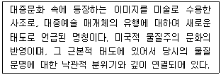
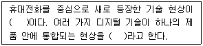
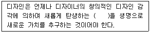
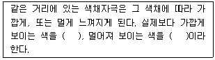
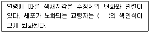
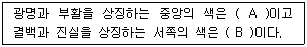
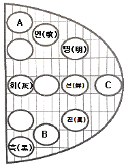

컬러리스트산업기사 (2019-03-03 기출문제)
1과목: 색채심리
1. 에바헬러의 색채 이미지 연상 중 폭력, 자유분방함, 예술가 페미니즘, 동성애의 이미지를 갖는 색채는?
- 2.5Y 5/4
- 2.5G 4/10
- 2.5PB 4/10
- 5P 3/10
(정답률: 68%)

2. 색채의 주관적 경험을 보여주는 것이 아닌 것은?
- 페흐너 효과
- 기억색
- 항상성
- 지역색
(정답률: 57%)
3. 색채조절의 효과가 아닌 것은?
- 자연스럽게 일할 기분이 생긴다.
- 정리정돈과 청소가 잘 된다.
- 일의 능률이 오른다.
- 개인적 취향을 만족시킨다.
(정답률: 73%)
4. 불특정 다수의 사람들이 거주하는 생활공간인 사무실, 도서관과 같은 건축공간의 색채조절로 부적합한 것은?
- 친숙한 색채환경을 만들어 이용자가 편안하게 한다.
- 근무자의 작업 능률을 증진시킬 수 있는 색채로 조절한다.
- 시야 내에는 색채자극을 최소화하도록 색채사용을 제한한다.
- 조도와 온도감, 습도, 방의 크기 같은 물리적 환경조건의 단점을 보완한다.
(정답률: 57%)
5. 색채 선호에 대한 설명 중 틀린 것은?
- 색에 대한 일반적인 선호 경향과 특정 제품에 대한 선호색은 다르다.
- 일본의 경우 자동차는 흰색을 선호하는 경향이 크다.
- 색에 대한 일반적인 선호 경향은 성별, 연령별에 따라 다른 특성을 보인다.
- 제품의 특성에 따라 선호되는 색채는 고정되어 있다.
(정답률: 79%)
6. 색채와 소리의 조화론을 처음으로 설명한 사람은?
- 칸트
- 뉴턴
- 아인슈타인
- 몬드리안
(정답률: 71%)
7. 다음 중 소비자가 소비행동을 할 때 제품 및 색채의 선택에 가장 많은 영향을 주는 요인은?
- 준거집단
- 대면집단
- 트렌드세터(trend setter)
- 매스미디어(mass media)
(정답률: 42%)
8. 색채와 촉감의 연결이 옳은 것은?
- 건조한 느낌 - 난색계열
- 촉촉한 느낌 - 밝은 노랑, 밝은 하늘색
- 강하고 딱딱한 느낌 - 고명도, 고채도의 색채
- 부드러운 감촉 - 저명도, 저채도의 색채
(정답률: 61%)
9. 국제 언어로서 활용되는 교통 및 공공시설물에 사용되는 안전을 위한 표준색으로 구급장비, 상비약, 의약품에 사용되는 상징색은?
- 빨강
- 노랑
- 파랑
- 초록
(정답률: 84%)
10. 색채의 구체적 연상과 추상적 연상이 잘못 연결된 것은?
- 초록 - 풀, 초원, 산 - 안정, 평화, 청초
- 파랑 - 바다, 음료, 청순 - 즐거움, 원숙함, 사랑
- 노랑 - 개나리, 병아리, 나비 - 명랑, 화려, 환희
- 빨강 - 피, 불, 태양 - 정열, 공포, 흥분
(정답률: 87%)
11. 젊음과 희망을 상징하고 첨단기술의 이미지를 연상시키는 색채는?
- 5YR 5/6
- 2.5BG 5/10
- 2.5PB 4/10
- 5RP 5/6
(정답률: 31%)
12. 매슬로우(Maslow)의 인간의 욕구 단계에 관한 설명으로 틀린 것은?
- 자아실현 욕구 - 자아개발의 실현
- 생리적 욕구 - 배고픔, 갈증
- 사회적 욕구 - 자존심, 인식, 지위
- 안전 욕구 - 안전, 보호
(정답률: 59%)
13. 색채와 다른 감각간의 교류현상 중 틀린 것은?
- 색채와 음악을 일치시키기 위한 노력은 있었으나 공통의 이론으로는 발전되지 못했다.
- 색채의 촉각적 특성은 표면색채의 질감, 마감처리에 의해 그 특성이 강조 또는 반감된다.
- 색채는 시각현상이며 색에 기반한 감각의 공유현상이다.
- 색채와 맛에 관한 연구는 문화적, 지역적 특성보다는 보편성에 기초를 두어야 한다.
(정답률: 59%)
14. 노란색과 철분이 많이 섞인 붉은색 암석이 성곽을 이루고 있는 곳에 위치한 리조트의 외관을 토양과 같은 YR계열로 색채디자인을 하였다. 이때 디자이너가 가장 중점적으로 고려한 것은?
- 시인성
- 다양성과 개성
- 주거자의 특성
- 지역색
(정답률: 87%)
15. 일반적으로 차분함을 선호하는 남성용 제품에 활용하기 좋은 색은?
- 밝은 노랑
- 선명한 빨강
- 어두운 청색
- 파스텔 톤의 분홍색
(정답률: 92%)
16. 불교에서 신성시되는 종교색은?
- 빨강
- 파랑
- 노랑
- 검정
(정답률: 86%)
17. 표본조사의 방법 중 조사대상을 전체를 조사하는 대신 일부분을 조사함을써 전체를 추측하는 조사방법은?
- 다단추출법
- 계통추출법
- 무작위추출법
- 등간격추출법
(정답률: 34%)
18. 브랜드 관리 과정이 옳게 나열된 것은?
- 브랜드 설정 → 브랜드 파워 → 브랜드 이미지 구축 → 브랜드 충성도 확립
- 브랜드 설정 → 브랜드 이미지 구축 → 브랜드 충성도 확립 → 브랜드 파워
- 브랜드 이미지 구축 → 브랜드 파워 →브랜드 설정 → 브랜드 충성도 확립
- 브랜드 이미지 구축 → 브랜드 충성도 확립 → 브랜드 파워 → 브랜드 설정
(정답률: 80%)
19. 색채의 사용에 있어서 색채의 기능성과 관련되어 적용된 경우는?
- 우리나라 국기의 검은색
- 공장내부의 연한 파란색
- 커피 전문점의 초록색
- 공군 비행사의 빨간 목도리
(정답률: 74%)
20. 색채치료에 대한 설명 중 틀린 것은?
- 빨강은 감각신경을 자극하여 시각, 후가, 청각, 미각, 촉각, 등에 도움을 주고 혈액 순환을 촉진시키고 뇌척수액을 자극하여 교감신경계를 활성화한다.
- 주황은 감상선 기능을 자극하고 부갑상선 기능을 저하시키며 폐를 확장시키며 근육의 경련을 진정시키는 데 효과가 있다.
- 초록은 방부제 성질을 갖고 근육과 혈관을 축소하며, 긴장감을 주는 균형과 조화의 색이다.
- 보라는 정신질환의 증상을 완화시킬 뿐만 아니라 감수성을 조절하고 배고픔을 덜 느끼게 해준다.
(정답률: 67%)
2과목: 색채디자인
21. 건축가 르 꼬르뷔지에(Le Corbusier)와 루이 설리번(Louis Sulivan)이 강조한 현대 디자인의 사상적 배경에 해당하는 것은?
- 심미주의
- 절충주의
- 기능주의
- 복합표현주의
(정답률: 75%)
22. 산업디자인에 있어서 기능성의 4가지 조건이 아닌 것은?
- 물리적 기능
- 생리적 기능
- 심리적 기능
- 심미적 기능
(정답률: 22%)
23. 디자인의 라틴어 어원인 데시그나레(designare)의 의미와 관련이 없는 것은?
- 지시한다.
- 계획을 세운다.
- 스케치한다.
- 본을 뜨다.
(정답률: 45%)
24. 다음에서 설명하는 디자인 사조는?

- 옵티칼 아트
- 팝 아트
- 아르데코
- 데 스틸
(정답률: 77%)
25. 주위를 환기시킬 때 , 단조로움을 덜거나 규칙성을 규칙성을 깨뜨릴 때, 관심의 초점을 만들거나 움직이는 효과와 흥분을 만들 때 이용하면 효과적인 디자인 요소는?
- 강조
- 반복
- 리듬
- 대비
(정답률: 61%)
26. 기계, 기술의 발달을 비판한 미술공예운동을 주장한 사람은?
- 헤르만 무테지우스(Hermann Muthesius)
- 윌리엄 모리스(William Morris)
- 앙리 반 데 벨데(Henry van de velde)
- 구텐베르크(Johannes Gutenberg)
(정답률: 73%)
27. 기업의 이미지를 극대화하기 위한 CI(Corporate Identity) 색채 계획 시 필수적 고려사항이 아닌 것은?
- 기업의 이념
- 이미지의 일관성
- 소재적용의 용이성
- 유사기업과의 동질성
(정답률: 82%)
28. 굿 디자인(Good Design) 운동의 근본적 배경을 "제품의 선택이 곧 생활양식의 선택"이라고 주장한 사람은?
- 루이지 콜라니(Luigi Colani)
- 그레고르 파울손(Gregor Paulsson)
- 윌리엄 고든(William J. Gordon)
- A. F. 오스본(A. F. Osborn)
(정답률: 32%)
29. 다음 중 마른 체형을 보완하기 위한 가장 효과적인 색채는?
- 5Y 7/3
- 5B 5/4
- 5PB 4/5
- 5P 3/6
(정답률: 76%)
30. 컬러 플래닝 프로세스가 옮게 나열된 것은?
- 기획 - 색채설계 - 색채관리 - 색채계획
- 기획 - 색채계획 - 색채설계 - 색채관리
- 기획 - 색채관리 - 색채계획 - 색채설계
- 기획 - 색채설계 - 색채계획 - 색채관리
(정답률: 83%)
31. 다음의 ( )에 공통적으로 들어갈 내용은?

- 쌍방향 커뮤니케이션(two-way communication)
- 인터렉션 디자인(interaction design)
- 디지털 컨버전스(digital convergence)
- 위지윅(WYSIWYG)
(정답률: 73%)
32. 굿 디자인(Good Design)의 조건으로 반드시 필요하다고 볼 수 없는 것은?
- 경제성과 독창성
- 주목성과 일관성
- 심미성과 질서성
- 합목적성과 효율성
(정답률: 75%)
33. 각 요소들이 같은 방향으로 운동을 계속하는 경향과 관련한 게슈탈트 그루핑 법칙은?
- 근접성
- 유사성
- 연속성
- 폐쇄성
(정답률: 74%)
34. 색채계획 과정에서 컬러 이미지의 계획능력, 컬러컨설턴트의 능력은 어느 단계에서 요구되는가?
- 색채환경분석
- 색채심리분석
- 색채전달계획
- 디자인에 적용
(정답률: 57%)
35. 실내디자인 색채계획 시 검토대상에 해당되지 않는 것은?
- 적합한 조도
- 색 면의 비례
- 인간의 심리상태
- 소재의 다양성
(정답률: 56%)
36. 다음 ( )에 가장 적절한 말은?

- 예술성
- 목적성
- 창조성
- 사회성
(정답률: 76%)
37. 최소한의 예술이라고 하는 미니멀리즘의 색채 경향이 아닌 것은?
- 개성적 성격, 극단적 간결성, 기계적 엄밀성을 표현
- 통합되고 단순한 색채 사용
- 시각적 원근갑을 도입한 일루전(illusion) 효과 강조
- 순수한 색조대비와 비교적 개성없는 색채도입
(정답률: 53%)
38. 컬러 플래닝의 계획단계에서 조사항목이 아닌 것은?
- 문헌 조사
- 앙케이트 조사
- 측색 조사
- 컬러 조색
(정답률: 65%)
39. 품평할 목적으로 제작되는 것으로, 완성예상 실물과 흡사하게 만드는데 중점을 두는 모델은?
- 아이소타입 모델
- 프로토타입 모델
- 프레젠테이션 모델
- 러프모델
(정답률: 50%)
40. 비례에 대한 설명으로 틀린 것은?
- 비례를 구성에 이용하여 훌륭한 형태를 만든 예로는 밀로의 비너스, 파르테논 신전 등이 있다.
- 황금비는 어떤 선을 2등분하여 작은 부분과 큰 부분의 비를, 큰 부분과 전체의 비와 같게 한 분할이다.
- 비례는 기능과도 밀접하여, 자연 가운데 훌륭한 기능을 가지고 있는 것의 형태는 좋은 비례양식을 가진다.
- 등차수열은 1 : 2 : 4 : 8 : 16....과 같이 이웃하는 두 항의 비가 일정한 수열에 의한 비례이다.
(정답률: 49%)
3과목: 섹채관리
41. 파장의 단위가 아닌 것은?
- nm
- mk
- Å
- um
(정답률: 41%)
42. 다음 중 색온도에 대한 설명이 옳은 것은?
- 색온도는 광원의 실제 온도이다.
- 높은 색온도는 붉은 색계열의 따뜻한 색에 대응된다.
- 백열등은 6000K 정도의 색온도를 지녔다.
- 백열등과 같은 열광원은 흑체의 색온도로 구분한다.
(정답률: 42%)
43. 한국산업표준(KS)에 정의된 색에 관한 용어에 대한 설명이 틀린 것은?
- 색순응 : 명순응 상태에서 시각계가 시야의 색에 적응하는 과정 및 상태
- 휘도순응 : 시각계가 시야의 휘도에 순응하는 과정 또는 순응한 상태
- 암순응 : 밝은 곳에서 어두운 곳으로 이동 시, 어두움에 적응하는 과정 및 상태
- 명소시 : 정상의 눈으로 100cd/m2의 상태에서 간상체가 활동하는 시야
(정답률: 68%)
44. 모니터의 색채 조절(Monitor Color Calibration)에 대한 설명으로 틀린 것은?
- 자연에 가까운 색채를 구현하기 위해서는 색온도를 6500K로 설정하는 것이 바람직하다.
- 감마 조절을 통해 톤 재현 특성을 교정한다.
- 흰색의 밝기를 조절한다.
- 색역 매핑(color gamut mapping)을 실시한다.
(정답률: 26%)
45. 다음 중 색온도(Color Temperature)가 가장 높은 것은?
- 촛불
- 백열등(200W)
- 주광색 형광등
- 백색 형광등
(정답률: 41%)
46. 다음 중 CCM과 관련이 없는 것은?
- 감법혼색
- 측정반사각
- 흡수계수와 산란계수
- 쿠벨카 문크 이론
(정답률: 25%)
47. 인쇄의 종류에 대한 설명 중 틀린 것은?
- 평판인쇄는 잉크가 묻는 부분과 묻지 않는 부분이 같은 평판에 있으며 오프셋(off set)인쇄라고도 한다.
- 등사판인쇄, 실크스크린 등은 오목판 인쇄에 해당된다.
- 볼록판 인쇄는 잉크가 묻어야 할 부분이 위로 돌출되어 인쇄하는 방식으로 활판, 연판, 볼록판이 여기에 해당된다.
- 공판인쇄는 판의 구멍을 통하여 종이, 섬유, 플라스틱 등의 표면에 인쇄잉크나 안료로 찍어내는 방법이다.
(정답률: 64%)
48. 반사율이 파장에 관계없이 높기 때문에 거울로 사용하기에 적합한 금속은?
- 금
- 구리
- 알루미늄
- 은
(정답률: 75%)
49. 색 비교를 위한 시환경에 대한 내용 중 일반적으로 이용하는 부스의 내부 색 명도로 옳은 것은?
- L* = 25의 무광택 검은색
- L* = 50의 무광택 검은색
- L* = 65의 무광택 무채색
- L* = 80의 무광택 무채색
(정답률: 27%)
50. LCD 모니터에서 노란색(Yellow)을 표현하기 위해 모니터 삼원색 중 사용되어야 하는 색으로 옳은 것은?
- Green + Blue
- Yellow
- Red + Green
- Cyan + Magenta
(정답률: 76%)
51. 측색의 궁극적인 목적과 거리가 먼 것은?
- 색을 정확하게 재현하기 위해
- 일정한 색 체계로 해석하여 전달하기 위해
- 색을 정확하게 파악하기 위해
- 색의 선호도를 나타내기 위해
(정답률: 84%)
52. 물체색은 광원과 조명방식에 따라 변한다. 이와 관련한 설명이 옳은 것은?
- 동일 물체가 광원에 따라 각기 다른 색으로 보이는 것을 광원의 연색성이라 한다.
- 모든 광원에서 항상 같은 색으로 보이는 현상을 메타머리즘이라고 한다.
- 백열등 아래에서는 한색계열 색채가 돋보인다.
- 형광등 아래에서는 난색계열 색태가 돋보인다.
(정답률: 56%)
53. 국제조명위원회(CIE)의 업적에 관한 설명으로 틀린 것은?
- 평균적인 사람의 색 인식을 기술하는 표준관찰자(standard observer)정립
- 이론적, 경험적으로 완벽한 균등색공간(uniform color space) 정립
- 사람의 시각 시스템이 특정색에 반응하는가를 기술한 삼자극치(tristimulus values) 계산법 정립
- 색 비교와 연구를 위한 표준광(standard illuminant)데이터 정립
(정답률: 36%)
54. CCM(Computer Color Matching)의 장점은?
- 분광반사율을 기준색과 일치시키므로 아이소머리즘을 실현할 수 있다.
- 기본 색료가 변할 때마다 필요한 데이터를 입력하지 않아도 된다.
- 착색 대상 소재의 특성 변화에 대한 데이터베이스를 만들지 않아도 된다.
- 다양한 조건에서 발생되는 메타메리즘을 실현할 수 있다.
(정답률: 45%)
55. 정량적이지 않고 주관적인 색채검사는?
- 육안검색
- 색차계
- 분광측색
- 분광광도계
(정답률: 84%)
56. 다음 중 합성염료는?
- 산화철
- 산화망간
- 목탄
- 모베인
(정답률: 66%)
57. 다음 중 출력기기가 아닌 것은?
- 모니터
- 스캐너
- 잉크젯 프린터
- 팩시밀리
(정답률: 52%)
58. 다음 중 색차식의 종류가 거리가 먼 것은?
- L*u*v* 표색계에 따른 색차식
- 아담스 니커슨 색차식
- CIE 2000색차식
- ISCC 색차식
(정답률: 31%)
59. 염료의 일반적인 특징으로 옳은 것은?
- 불투명하다.
- 무기물이다.
- 물에 녹지 않는다.
- 표면에 친화력이 있다.
(정답률: 67%)
60. 다음 중 색채오차의 시각적인 영향력이 가장 큰 것은?
- 광원에 따른 차이
- 질감에 따른 차이
- 대상의 표면 상태에 따른 차이
- 대상의 형태에 따른 차이
(정답률: 75%)
4과목: 색채지각의이해
61. 햇살이 밝은 운동장에서 어두운 실내로 이동할 때, 빨간색은 점점 사라져 보이고 청색이 밝게 보이는 시각현상은?
- 메타머리즘
- 항시성
- 보색잔상
- 푸르킨예 현상
(정답률: 76%)
62. 색채를 강하게 보이기 위해 디자인에서 악센트로 자주 사용하는 색은?
- 채도가 높은 색
- 채도가 낮은 색
- 명도가 높은 색
- 명도가 낮은 색
(정답률: 79%)
63. 다음 빈 칸에 들어갈 말이 순서대로 옳은 것은?

- 팽창색, 수축색
- 흥분색, 진정색
- 진출색, 후퇴색
- 강한색, 약한색
(정답률: 85%)
64. 인쇄 과정 중에 원색분판 제판과정에서 시안(Cyan) 분해 네거티브 필름을 만들기 위해 사용하는 색 필터는?
- 시안색 필터
- 빨간색 필터
- 녹색 필터
- 파란색 필터
(정답률: 49%)
65. 대비현상에 대한 설명으로 옳은 것은?
- 명도대비란 밝은 색은 어두워 보이고, 어두운 색은 밝아 보이는 현상이다.
- 유채색과 무채색 사이에서는 채도대비를 느낄 수 없다.
- 생리적 자극방법에 따라 동시대비와 계시대비로 나눌 수 있다.
- 색상대비가 잘 일어나는 순서는 3차색 ＞ 2차색 ＞ 1차색의 순이다.
(정답률: 57%)
66. 파장이 동일해도 색의 채도가 높아짐에 따라 색이 달라 보이는 현상(또는 효과)은?
- 색음 현상
- 애브니 효과
- 리프만 효과
- 베졸트 브뤼케 현상
(정답률: 64%)
67. 색각 이론에 관한 설명으로 틀린 것은?
- 헤링은 반대색설을 주장하였다.
- 영.헬름흘쯔는 3원색설을 주장하였다.
- 헤링 이론의 기본색은 빨강, 주황, 녹색, 파랑이다.
- 영, 헬름흘쯔 이론의 기본색은 빨강, 녹색, 파랑이다.
(정답률: 78%)
68. 다음 중 흥분감을 가장 잘 나타낼 수 있는 파장은?
- 730nm
- 600nm
- 530nm
- 420nm
(정답률: 72%)
69. 다음 중 교통사고율이 가장 높은 자동차의 색상은?
- 파랑
- 흰색
- 빨강
- 노랑
(정답률: 56%)
70. 어느 특정한 색채가 주변 색채의 영향을 받아 본래의 색과는 다른 색채로 지각되는 경우는?
- 색채의 지각효과
- 색채의 대비효과
- 색채의 자극효과
- 색채의 혼합효과
(정답률: 50%)
71. 여러 가지 파장의 빛이 고르게 섞여 있을 때 지각되는 색은?
- 녹색
- 파랑
- 검정
- 백색
(정답률: 79%)
72. 색의 동화효과를 바르게 설명한 것은?
- 일정한 자극이 사라진 후에도 지속적으로 자극을 느끼는 현상이다.
- 대비효과의 일종으로서 음성적 잔상으로 지각된다.
- 색의 경연감에 영향을 주는 지각 효과이다.
- 색의 전파효과 또는 혼색효과라고 한다.
(정답률: 64%)
73. 시세포에 관한 설명으로 틀린 것은?
- 추상체는 장파장, 중파장, 단파장의 동일한 비율로 색을 인지한다.
- 인간은 추상체와 간상체의 비율로 볼 때 색상과 채도의 구별보다 명도의 구별에 더 민감하다.
- 추상체는 망막의 중심부인 중심와에 존재한다.
- 간상체는 단일세포로 구성되어 빛의 양을 흡수하는 정도에 따라 빛을 감지한다.
(정답률: 54%)
74. 빛의 특성에 관한 설명 중 틀린 것은?
- 파장이 짧을수록 빛의 산란도 심해지므로 청색광이 많이 산란하여 청색으로 보인다.
- 대기 중의 입자가 크거나 밀도가 높은 경우 모든 빛을 균일하게 산란시켜 거의 백색으로 보인다.
- 깊은 물이 프르게 보이는 것은 물은 빨강을 약간 흡수하고 파랑을 반사하기 때문이다.
- 저녁노을이 좀 더 보랏빛으로 보이는 이유는 빨강과 파랑을 흡수하기 때문이다.
(정답률: 60%)
75. 가법혼색과 감법혼색의 설명으로 틀린 것은?
- 가법혼색은 네거티브필름 제조, 젤라틴 필터를 이용한 빛의 에술 등에 활용된다.
- 색필터는 겹치면 겹칠수록 빛의 양은 더해지고, 명도가 높아지기 때문에 가법혼색이라 부른다.
- 감법혼색은 삼원색은 Yellow, Magenta, Cyan이다.
- 감법혼색은 컬러 슬라이드, 컬러영화필름, 색채사진 등에 이용되어 색을 재현시키고 있다.
(정답률: 48%)
76. 다음 ( )에 들어갈 내용으로 적합한 것은?

- 청색계열
- 적색계열
- 황색계열
- 녹색계열
(정답률: 49%)
77. 면적 대비에 대한 설명 중 옳은 것은?
- 동일한 색이라도 면적이 커지면 명도와 채도가 감소해 보인다.
- 큰 면적의 강한 색과 작은 면적의 약한색은 조화된다.
- 강렬한 색채가 큰 면적을 차지하면 눈이 피로해지므로 채도가 낮은 색을 사용하여 눈을 보호한다.
- 큰 면적보다 작은 면적 쪽의 색채가 훨씬 강렬하게 보인다.
(정답률: 66%)
78. 안구내에서 빛의 반사를 방지하며, 눈에 영향을 보급하는 역할을 하는 것은?
- 맥락막
- 공막
- 각막
- 망막
(정답률: 35%)
79. 보색에 대한 설명 중에서 틀린 것은?
- 모든 2차색은 그 색에 포함되지 않은 원색과 보색관계에 있다.
- 보색 중에서 회전혼색의 결과 무채색이 되는 보색을 특히 심리보색이라 한다.
- 보색관계에 있는 두 색광의 혼합결과는 백색광이 된다.
- 색상환에서 보색이 되는 두 색을 이웃하여 놓았을 때 보색대비 효과가 나타난다.
(정답률: 35%)
80. 중간혼색에 대한 설명으로 틀린 것은?
- 중간혼색은 가법 혼색과 감법 혼색의 중간에 해당된다.
- 중간혼색의 대표적 사례는 직물의 디자인이다.
- 중간혼색은 물체의 혼색이 아니다.
- 컬러 텔레비전은 중간혼색에 해당된다.
(정답률: 32%)
5과목: 색채체계의이해
81. 먼셀 색표집에서 소재나 재현의 발달에 따라 표현이 범위가 달라질 수 있는 속성은?
- 색상
- 흑색량
- 명도
- 채도
(정답률: 28%)
82. 한국산업표준(KS) 중의 관용색명에 관한 설명으로 옳은 것은?
- 관용색명은 주로 사물의 명칭에서 유래한 것으로, 색의 삼속성에 의한 표시기호가 병기되어 있다.
- 세먼핑크, 올리브색, 에메랄드그린 등의 색명은 사용할 수 없다.
- 한국산업표준(KS) 관용색명은 독일 공업 규격 색표에 준하여 만든 것이다.
- 색상은 40 색상으로 분류되고 뉘앙스를 나타내는 수식어와 함께 쓰인다.
(정답률: 48%)
83. 다음 ( )에 들어갈 오방색으로 옳은 것은?

- A : 황색, B : 백색
- A : 청색, B : 황색
- A : 백색, B : 황색
- A : 황색, B : 홍색
(정답률: 77%)
84. NCS 색체계에서 검정을 표기한 것은?
- ⑤00-N
- 3000-N
- 5000-N
- 9000-N
(정답률: 59%)
85. 고채도의 반대색상 배색에서 느낄 수 있는 이미지는?
- 협조적, 온화함, 상냥함
- 차분함, 일관됨, 시원시원함
- 강함, 생생함, 화려함
- 정적임, 간결함, 건전함
(정답률: 45%)
86. P.C.C.S. 색체계에서 관한 설명으로 틀린 것은?
- 명도와 채도를 톤(tone)이라는 개념으로 정리하였다.
- 명도를 0.5단계로 세분화하여, 총 17단계로 구분한다.
- 1964년에 일본 색채연구소가 발표한 컬러 시스템이다.
- 색상, 포화도, 암도의 순서로 색을 표시한다.
(정답률: 50%)
87. 먼셀 색입체의 수직 단면도에서 볼수 없는 것은?
- 다양한 색상환
- 다양한 명도
- 다양한 채도
- 보색 색상면
(정답률: 44%)
88. 채도와 관련된 용어가 아닌 것은?
- 선명도
- 색온도
- 포화도
- 지각 크로마
(정답률: 45%)
89. 그림은 한국전통색과 톤의 서술어의 개념을 나타낸 것이다. A, B, C 전통색 톤을 순서대로 옳게 나열한 것은?

- 담(淡), 숙(熟), 순(純)
- 숙(熟), 순(純), 담(淡)
- 농(濃), 담(淡), 순(純)
- 숙(熟), 순(純), 농(濃)
(정답률: 37%)
90. 문,스펜서 색채조화론에 대한 설명이 틀린 것은?
- 균형있게 선택된 무채색의 배색은 유채색의 배색에 못지 않은 아름다움을 나타낸다.
- 동일색상의 조화는 매우 바람직하다.
- 작은 면적의 강한 색과 큰 면적의 약한 색은 조화된다.
- 색상과 채도를 일정하게 하고 명도만을 변화시킨 단순한 배색은 여러 가지 색상을 사용한 복잡한 배색보다는 미도가 낮다.
(정답률: 58%)
91. 오스트발트 색체계의 특징이 아닌 것은?
- 표시된 기호로 색의 직관적 연상이 가능하다.
- 지각적 등간격성이 확립되어 있지 않아 측색을 위한 척도로 삼기에는 불충분하다.
- 안료 제조 시 정량조재에 응용이 가능하다.
- 색배열의 위치로 조화되는 색을 찾기 쉬워 디자인 색채 계획에 활용하기 적합하다.
(정답률: 26%)
92. 먼셀 색체계의 7.5RP 5/6에 대한 설명으로 옳은 것은?
- 명도 7.5, 색상 5RP, 채도 6
- 색상 7.5RP, 명도 5, 채도 6
- 채도 7.5, 색상 5RP, 명도 6
- 색상 7.5RP, 채도 5, 명도 6
(정답률: 77%)
93. CIE 색체계에 대한 설명 중 틀린 것은?
- CIE LAB과 CIE LUV는 CIE의 1931년 XYZ체계에서 변형된 색공간체계이다.
- 색채공간을 수학적인 논리에 의하여 구성한 것이다.
- XYZ체계는 삼원색 RGB 3자극치의 등색함수를 수학적으로 변환하는 체계이다.
- 지각적 등간격성에 근거하여 색입체로 체계화한 것이다.
(정답률: 46%)
94. 색의 표준화를 통해 얻을 수 있는 효과와 거리가 먼 것은?
- 색채정보의 보관
- 색채정보의 재생
- 색채정보의 전달
- 색채정보의 창조
(정답률: 78%)
95. L*a*b* 측색값에 대한 설명 중 옳은 것은?
- L*값이 클수록 명도가 높고, a*와 b*의 절대값이 클수록 채도가 높다.
- L*값이 클수록 명도가 낮고, a*가 작아지면 빨간색을 띤다.
- L*값이 클수록 명도가 높고, a*와 b*가 0일때 채도가 가장 높다.
- L*값이 클수록 명도가 낮고, b*가 작아지면 파랑색을 띤다.
(정답률: 62%)
96. 요하네스 이텐의 색채조화론과 거리가 먼 것은?
- 2색조화
- 4색조화
- 6색조화
- 8색조화
(정답률: 56%)
97. 단조로운 배색에 대조되는 색을 배색했을 때 나타나는 배색효과는?
- 반복배색 효과
- 강조배색 효과
- 톤배색 효과
- 연속배색 효과
(정답률: 76%)
98. 현색계와 혼색계에 대한 설명 중 옳은 것은?
- 혼색계는 사용하기 쉽고, 측색기를 필요로 하지 않는다.
- 대표적인 혼색계로는 먼셀, NCS, DIN 등이다.
- 현색계는 좌표 또는 수치를 이용하여 표현하는 체계이다.
- 현색계는 조건등색과 광원의 영향을 많이 받는다.
(정답률: 50%)
99. 오스트발트 색체계와 관련이 없는 것은?
- 등순색 계열
- 등흑색 계열
- 등혼색 계열
- 등백색 계열
(정답률: 77%)
100. 톤온톤(tone on tone) 배색 유형과 관계있는 배색은?
- 명도의 그라데이션 배색
- 세퍼레이션 배색
- 색상의 그라데이션 배색
- 이미지 배색
(정답률: 56%)